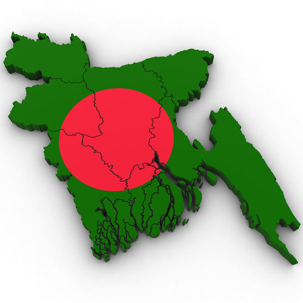

|  |
The name of our country is the People's Republic of Bangladesh. It is one the most beautiful country in the world. Our country was a part of Pakistan before 1971. Then we freed our country and achieved victory after nine month's liberation war. 3 million people sacrificed their lives in the liberation war in 1971. Our independence day is 26th March and Victory day is 16th December. The national language of our country is Bangla. It is also a matter of great pride for us that we are the only nation who sacrificed their lives for the sake of their mother tongue in 21st February of 1952. In order to show respect to them, UNESCO has declared 21st February as International Mother Language Day. The name of the capital of Bangladesh is Dhaka. It is the busiest and populated city of our country. The total population is 16 crore. The total area of our country is 1,47,570 square km. Our country is a river oriented country. The main rivers of our country are Padma, Jamuna, Meghna. But due to pollution and river pollution, all of these rivers have shrunk. People of all religion live peacefully in this country but most of them are Muslim. The famous places for tourist's visit to our country are Sundarban, Cox'sBazar, St Martin, Kuakata. Sundarban is the largest Mangrove forest in the world. Cox's Bazar has the longest sea beach. The main occasion that people celebrate is Eid Ul Fitar, Eid Ul Ajha, Pahela Baishakh etc. Bangladesh is a developing country. The economics of this country is mainly based on agriculture. The main crops that this country produce are rice, jute, tea, fruit etc. The country also earns a large amount of foreign remittance by exporting RMG and Manpower. The main food that the inhabitant of this country eat are rice and fish. Hilsha is the national fish and Doyel is the national bird of our country. The national beast of the country is Royal Bengal Tiger. The national bird of our country is Doyel and national flower is Shapla. Hadudu is the national game of our country but Cricket is the most popular game. People of this country knows how to live happily and peacefully within poverty and national hazards. Season
|